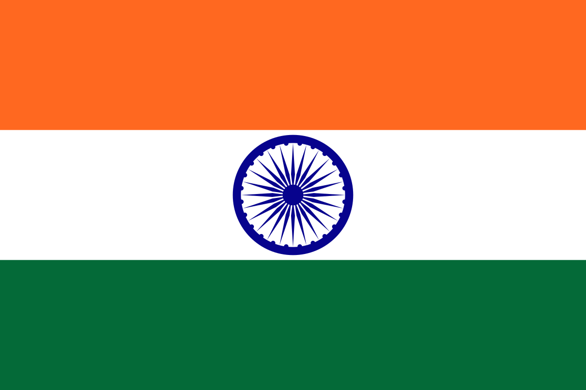
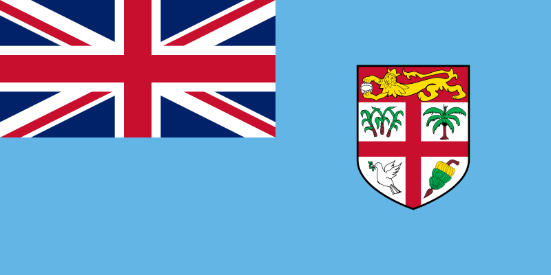
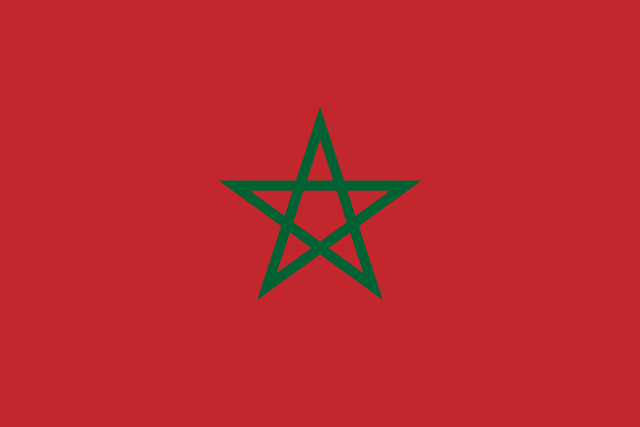
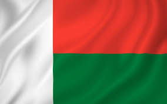

| Europa | Asia | America | Oceania | Africa |
|---|---|---|---|---|
| Alemania | Japon | Mexico | Australia | Sudafrica |
| Francia | China | EUA | Nueva Zelanda | Nigeria |
| Holanda | India | Canada | Samoa | Kenia |
| España | Filipinas | Venezuela | Fiyi | Marruecos |
| Inglaterra | Malasia | Brasil | Islas Marshall | Madagascar |
Alemania es un país de Europa occidental con un paisaje de bosques, ríos, cadenas montañosas y playas en el mar del Norte.
Francia, en Europa Occidental, abarca ciudades medievales, villas alpinas y playas mediterráneas. París, su capital, es famosa por sus firmas de alta costura, los museos de arte clásico, como el Louvre, y monumentos como la Torre Eiffel.

Los Países Bajos son un país del noroeste europeo conocido por su paisaje plano de canales, campos de tulipanes, molinos y ciclovías.

España, país de la península ibérica de Europa, incluye 17 regiones autónomas con diversas características geográficas y culturales.
Inglaterra, la cuna de Shakespeare y The Beatles, es un país de las Islas Británicas que limita con Escocia y Gales. La capital, Londres, se ubica en el río Támesis y cuenta con el Parlamento, el Big Ben y la Torre de Londres del siglo XI.
Japón es una nación insular del océano Pacífico con densas ciudades, palacios imperiales, parques nacionales montañosos y miles de santuarios y templos.

China es una nación muy poblada de Asia Oriental cuyos vastos paisajes abarcan praderas, desiertos, montañas, lagos, ríos y más de 14,000 km de costa.
La India es un vasto país de Asia del Sur con un terreno diverso que abarca desde las cumbres del Himalaya hasta la costa del océano Índico.
Filipinas es un país del sur de Asia en el Pacífico Occidental, que abarca más de siete mil islas. Su capital, Manila, es famosa por su paseo costero y Binondo, el barrio chino de siglos de antigüedad.

Malasia es un país del Sudeste Asiático que ocupa partes de la península malaya y la isla de Borneo. Es conocido por sus playas, bosques tropicales y la mezcla de influencias culturales de Malasia, China, la India y Europa.

México es un país entre los Estados Unidos y América Central, conocido por las playas en el Pacífico y el golfo de México, y su diverso paisaje de montañas, desiertos y selvas.

Estados Unidos es un país de 50 estados que ocupa una extensa franja de América del Norte, con Alaska en el noroeste y Hawái que extiende la presencia del país en el océano Pacífico

Canadá es el país norteamericano que se extiende desde los Estados Unidos en el sur hasta el círculo polar ártico en el norte. Las ciudades principales incluyen la enorme Toronto, Vancouver, el centro cinematográfico de la costa oeste, las ciudades de habla francesa Montreal y Quebec, y la capital Ottawa.

Venezuela es un país de la costa norte de América del Sur, con diversas atracciones naturales. A lo largo de su costa en el Caribe, hay islas turísticas tropicales, entre ellas la Isla de Margarita y el archipiélago Los Roques.

Brasil es un vasto país de Sudamérica que se extiende desde la Cuenca del Amazonas en el norte hasta los viñedos y las enormes cataratas del Iguazú en el sur.
Australia es un país rodeado por los océanos Índico y Pacífico. Sus ciudades principales (Sídney, Brisbane, Melbourne, Perth y Adelaida) son costeras. Su capital, Canberra, se encuentra en el interior.
Nueva Zelanda es un país en el suroeste del océano Pacífico, que comprende dos islas principales, ambas marcadas por los volcanes y la glaciación.

Samoa es un país que abarca el grupo más occidental del archipiélago de Samoa, en la Polinesia.
Fiyi, un país del Pacífico Sur, es un archipiélago de más de 300 islas. Es famoso por sus paisajes escabrosos, las playas bordeadas de palmeras y los arrecifes de coral con lagunas de aguas cristalinas.
Las Islas Marshall, oficialmente conocidas como República de las Islas Marshall, son un país insular ubicado en el océano Pacífico, en la región de Micronesia.Las Islas Marshall, oficialmente conocidas como República de las Islas Marshall, son un país insular ubicado en el océano Pacífico, en la región de Micronesia.

Sudáfrica es un país del extremo más meridional del continente africano que se caracteriza por sus numerosos ecosistemas distintos.
Nigeria, oficialmente República Federal de Nigeria, es un país de África occidental, que limita con Níger al norte, con Chad en el nordeste, con Camerún en el este y con Benín en el oeste.

Kenia es un país de África Oriental con una costa en el océano Índico. Su territorio abarca sabana, terrenos en lagos, el espectacular Gran Valle del Rift y zonas montañosas altas.
Marruecos es un país de África del Norte que limita con el océano Atlántico y el mar Mediterráneo, y se distingue por las influencias culturales bereberes, árabes y europeas.
Madagascar es una enorme nación insular frente a la costa sureste de África. Alberga miles de especies animales, como lémures, que solo se encuentran en este lugar, junto con bosques tropicales, playas y arrecifes.
